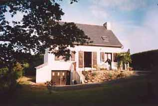
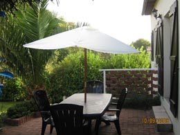
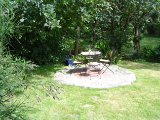

The Garden
 The rear garden is mostly lawned and surrounded by oak trees. The terrace is elevated and looks out over the garden.
The lounge opens via French doors onto a sun terrace, which is in the sun for the majority of the day.
There is also a second patio area at the end of the garden which is sunny until late evening.